Textual Networks
We’ll now turn our attention to methods for identifying which links to retain in order to create a network between terms/tokens in a corpus. To do this, we will present different types of indicators (direct and indirect) which either propose a textual network or a semantic network. A textual network shows the terms present in the corpus and links them with other terms present in the same unit of analysis (document, paragraph, sentence). This type of network shows us which words/tokens appear in close proximity. A semantic network identifies words that appear together with the same other words. The idea is that when two terms always appear with the same other terms, they have a close semantic meaning. In what follows, we’ll look at 6 indicators, 4 direct, 2 indirect. These indicators are automatically calculated in the free Cortext software. We’ll go into the details of how these indicators are calculated, to ensure a detailed understanding of their advantages and limitations, so that the analyst can choose the right indicator for the right use case. For those who don’t wish to deal with the technical side, the final section offers a summary table presenting the interpretation, advantages and limitations of each indicator.
To enable readers who wish to repeat the calculations to make sure they have mastered the formulas, we will take an example of 5 documents with short text to enable manual calculation and to illustrate things a little more simply. In the chapters on use cases, examples will be presented using larger corpora, but based on a basic understanding of the indicators as presented here.
For the remainder of this chapter, we’ll use the corpus shown in figure \(\ref{5_docs}\). This corpus contains 5 documents of varying text length. In these texts, we’ve colored the words “tire” and “geometry”, as we’ll be using them in the examples to interpret the indicators.
All the indicators we present here are based in one way or another on , i.e. the number of times two terms appear together in the same unit of analysis. In what follows, we use the document as the unit of analysis, although it is possible to choose the chapter, paragraph or sentence as required.

Direct indicators
raw cooccurrences
The most basic technique for identifying co-occurrences is simply to count them. To do this, we produce a so-called co-occurrence matrix. This matrix contains, for all the words/tokens identified in the corpus, the number of times they appear in the same document with another term. In the case of our 5 documents, we have 63 words in all, and therefore a 63x63 matrix. Given the limited space on a page of this document, we’ll present a subset of this matrix. In the table \(\ref{co_occurrence_matrix}\) we show the co-occurrences between 7 tokens of the 5 documents. In red, the number of co-occurrences between the term “geometry” and “tire”. According to the matrix, the terms are found together in 4 documents. This value is noted as \(n(i,j) = n(tire, geometry) = 4\). In the shaded cells we have the sum of the co-occurrences in the sample. This line is only there to clarify the calculation. In the sample (the submatrix shown here) tire has 13 co-occurrences with the 6 other terms in the sample, which corresponds to the sum in row or column. Overall in the corpus, the term “tire” has 105 co-occurrences and we have 1372 co-occurrences in all.
| tire | body | geometry | adjacent | edge | axial | radius | Somme exemple | Total corpus | |
|---|---|---|---|---|---|---|---|---|---|
| tire | 5 | 2 | 4 | 1 | 3 | 1 | 2 | 13 | 105 |
| body | 2 | 2 | 2 | 1 | 1 | 1 | 0 | 7 | 53 |
| geometry | 4 | 2 | 4 | 1 | 3 | 1 | 1 | 12 | 90 |
| adjacent | 1 | 1 | 1 | 1 | 1 | 1 | 0 | 5 | 39 |
| edge | 3 | 1 | 3 | 1 | 3 | 1 | 1 | 10 | 76 |
| axial | 1 | 1 | 1 | 1 | 1 | 1 | 0 | 5 | 39 |
| radius | 2 | 0 | 1 | 0 | 1 | 0 | 2 | 4 | 36 |
| Somme Exemple | 13 | 7 | 12 | 5 | 10 | 5 | 4 | 56 | … |
| Total corpus | 105 | 53 | 90 | 39 | 76 | 39 | 36 | … | 1372 |
Table 1: Extraction de la matrice des co-occurrences
The raw indicator transforms this matrix into a network with a weight on the links corresponding to the number of co-occurrences. In the \(\ref{nw_semantic_raw}\) we represent this matrix as a network. On the left, all terms are present, while on the right, weak co-occurrences have been removed. By playing with the weights in this way, we can highlight the core of the subject. Here, the texts deal with tire geometry, which is at the heart of the network. More peripheral elements such as the tire body or radius are also visible.
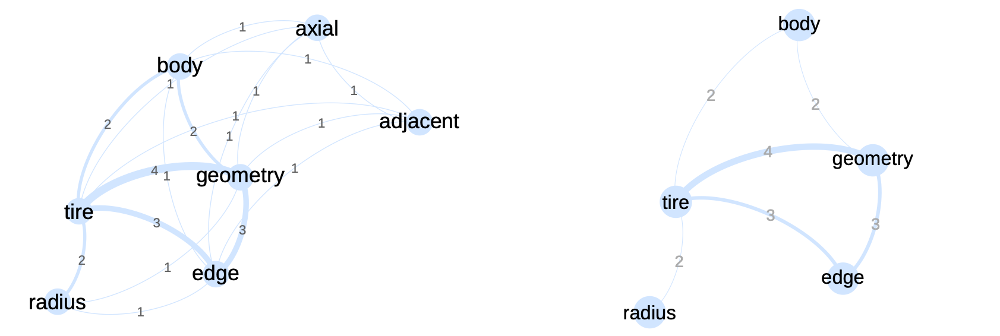
Network generated from the co-occurrence submatrix given in table \(\ref{co_occurrence_matrix}\). The numbers on the links correspond to the matrix weights. The 2 between the terms “body” and “tire” indicates that these terms are present together in two documents.
These results are therefore relatively easy to interpret. The hypothesis is that the number of times two tokens appear together (in the same document, paragraph or sentence), gives information on the semantic sense between the tokens. This exercise can be replicated on the whole corpus, as in the network in figure \(\ref{nw_semantic_raw}\). In this network, all identified tokens are represented by nodes. If a co-occurrence exists between two tokens, a link is visible; the thicker the link, the stronger the co-occurrence. As stated earlier in this chapter, the network is very dense, even if we can identify certain communities. Further processing is therefore required to analyze the structure of this type of network.
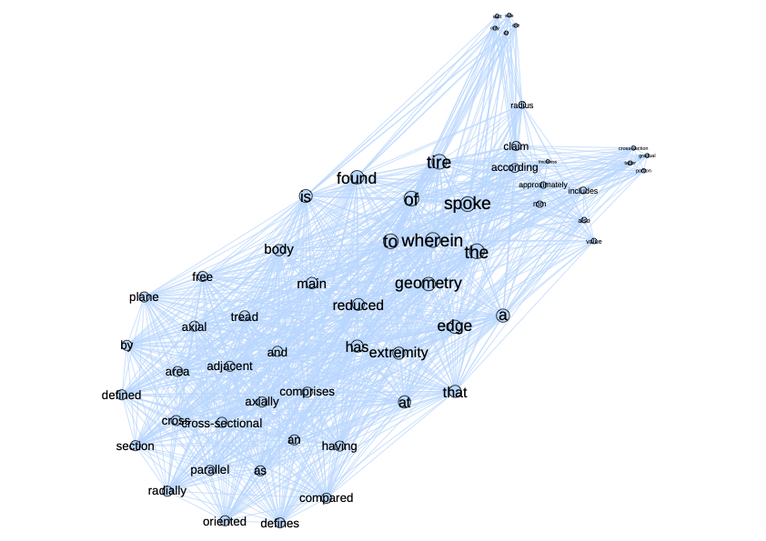
The raw co-occurrences reflect the language elements of the corpus, highlighting mainly terms according to their frequency. This indicator is not able to highlight important terms with a lower frequency.
The limitations of this approach are, however, significant. Using raw counts runs the risk of highlighting mainly language-related elements, as well as the asymmetrical distribution of tokens in a given language. The fact that two terms often appear together does not imply that this association is of any interest for analysis.
More sophisticated indicators have therefore been developed to reduce the influence of co-occurrences, which are of little interest in highlighting co-occurrences that structure the corpus.
The Cramer indicator
This is an indicator developed by [@cramer1979some]. It is an indicator that is automatically calculated in the Cortext Manager text analysis software.
This indicator aims to remove language bias. In a given language, certain words occur more often than others, creating high co-occurrences for these words, which are de facto highlighted to the detriment of words that have lower frequencies but may be of interest. To correct for these biases, raw co-occurrences will be compared with expected co-occurrences. In other words, if a term is frequent in the text, it will have more co-occurrences by definition. An infrequent term will have fewer co-occurrences. The number of co-occurrences we can expect can be estimated by a statistical calculation:
\[\begin{equation} e(i,j) = \frac{n(i) \cdot n(j)}{n} \end{equation}\]In this equation, \(n(i)\) corresponds to the number of co-occurrences of token \(i\) and \(n\) to the number of co-occurrences in the corpus as a whole. In our example, \(n\) amounts to summing the matrix and dividing by two (the matrix being symmetrical). \(n(i)\) means summing the row or column corresponding to \(i\). In extracting the matrix \(n(tire) = 13\), \(n(geometry) = 12\), \(n=56\). The calculation of this indicator only makes sense if we mobilize the values of the entire corpus, so we’ll use the bold values in the matrix:
\[\begin{equation} e(tire,geometry) = \frac{n(tire) \cdot n(geometry)}{n} = \frac{105 \cdot 90}{2744} = \frac{9450}{2744} = 3.44 \end{equation}\]The number of times we expect to see “tire” and “geometry” together in the same unit (document, paragraph, sentence) is 3.44. By calculating this value for the matrix endpoints, we obtain the following results:
| tire | body | geometry | adjacent | edge | axial | radius | |
|---|---|---|---|---|---|---|---|
| tire | 4.02 | 2.03 | 3.44 | 1.49 | 2.91 | 1.49 | 1.38 |
| body | 2.03 | 1.02 | 1.74 | 0.75 | 1.47 | 0.75 | 0.7 |
| geometry | 3.44 | 1.74 | 2.95 | 1.28 | 2.49 | 1.28 | 1.18 |
| adjacent | 1.49 | 0.75 | 1.28 | 0.55 | 1.08 | 0.55 | 0.51 |
| edge | 2.91 | 1.47 | 2.49 | 1.08 | 2.1 | 1.08 | 1 |
| axial | 1.49 | 0.75 | 1.28 | 0.55 | 1.08 | 0.55 | 0.51 |
| radius | 1.38 | 0.7 | 1.18 | 0.51 | 1 | 0.51 | 0.47 |
Table 1: Matrice des valeurs attendues pour les 5 documents du corpus;
The second step in the formula is then to compare this expected (or hoped-for) number with the observed number. The latter is the number of co-occurrences found in the co-occurrence matrix:
\[\begin{eqnarray} \frac{n(i,j) - e(i,j)}{e(i,j)} &=& \frac{n(i,j)}{e(i,j)}-1\\ \frac{4}{3.44} - 1 &=& 0.16 \end{eqnarray}\]The result shows that the number of co-occurrences is higher than expected (result \(>0\)). In fact, the number is 16% higher than expected. Conversely, the same calculation for the “pull” and “adjacent” terms gives a negative result: \(-0.33\), implying here that the number is 67% lower than expected. The set of values for the matrix is represented in table \(\ref{table_cramer}\).
| tire | body | geometry | adjacent | edge | axial | radius | |
|---|---|---|---|---|---|---|---|
| tire | -1 | -0.01 | 0.16 | -0.33 | 0.03 | -0.33 | 0.45 |
| body | -0.01 | -1 | 0.15 | 0.33 | -0.32 | 0.33 | -1 |
| geometry | 0.16 | 0.15 | -1 | -0.22 | 0.2 | -0.22 | -0.15 |
| adjacent | -0.33 | 0.33 | -0.22 | -1 | -0.07 | 0.8 | -1 |
| edge | 0.03 | -0.32 | 0.2 | -0.07 | -1 | -0.07 | 0 |
| axial | -0.33 | 0.33 | -0.22 | 0.8 | -0.07 | -1 | -1 |
| radius | 0.45 | -1 | -0.15 | -1 | 0 | -1 | -1 |
Table 1: Matrice des valeurs de Cramer pour les 5 documents du corpus.
We then assume that we want to keep only those co-occurrences that deviate from the expected value, and especially those that exceed the expected value. Other co-occurrences will be discarded. This gives us an automatic filter that facilitates network processing. Figure \(\ref{Semantique_complet_cramer}\) shows the network linked to the Cramer scores. When we compare this network with the one in figure \(\ref{nw_semantique_raw}\) we see that the Cramer network is less dense and shows more clearly defined communities. We’ve retained all links with a value > 0. In this network, a link between two terms indicates that these terms appear together more than expected. It’s a kind of deviation from the mean.
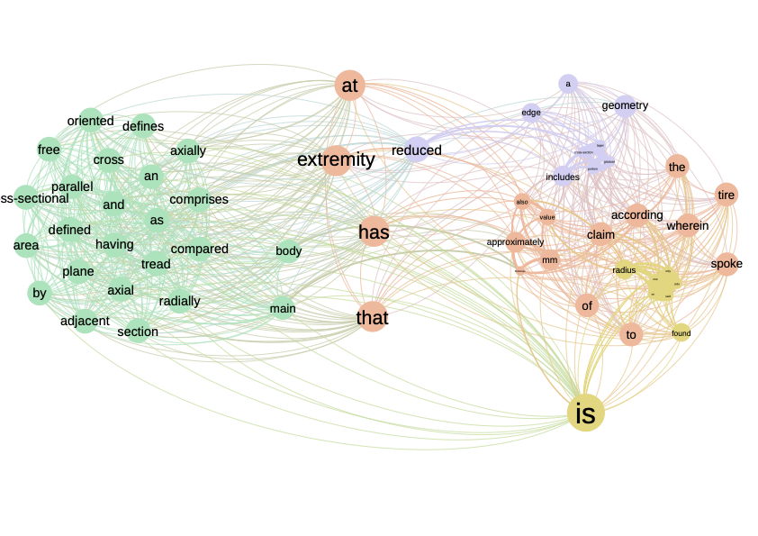
Network connecting terms linked by a positive value according to the Cramer indicator. Colors correspond to community detection performed by modularity maximization. Note: no cleaning has been carried out on the words retained, as efficient cleaning normally removes words such as “has”, “is”, “of” etc.
The Cramer indicator identifies deviations from randomness and is thus able to identify important terms with low frequencies. In addition, the value of the indicator can be interpreted.
\(\chi^2\)
The \(\chi^2\) indicator is well known in statistics, where it is commonly used to identify whether a deviation from an expected value is statistically significant. In this sense, the indicator is close to Cramer’s. The difference is in the denominator, where the root function is applied.
\[\begin{equation} \chi^2(i,j) = \frac{n(i,j) - e(i,j)}{{sqrt{e(i,j)}}\\} \end{equation}\]A value below what’s expected will give rise to negative values, values above what’s expected will give rise to positive values, close to 0 we’re in the expected zone. The results are in the \(\ref{Matrice_chi2}\) table. The higher the absolute value, the more it deviates from what’s expected.
- “Adjacent” and “Axial” have the highest positive score, implying that these two terms are found together more often in the same document than expected, so their association should be retained.
- “Radius” and “body” have the lowest negative score, implying that their association is well below what’s expected. Although we won’t retain this link, it is nonetheless interesting for other applications (identification of white zones, for example).
| tire | body | geometry | adjacent | edge | axial | radius | |
|---|---|---|---|---|---|---|---|
| tire | 0 | -0.02 | 0.3 | -0.403 | 0.054 | -0.403 | 0.53 |
| body | -0.02 | 0 | 0.198 | 0.284 | -0.386 | 0.284 | -0.834 |
| geometry | 0.3 | 0.198 | 0 | -0.247 | 0.321 | -0.247 | -0.166 |
| adjacent | -0.403 | 0.284 | -0.247 | 0 | -0.077 | 0.599 | -0.715 |
| edge | 0.054 | -0.386 | 0.321 | -0.077 | 0 | -0.077 | 0.003 |
| axial | -0.403 | 0.284 | -0.247 | 0.599 | -0.077 | 0 | -0.715 |
| radius | 0.53 | -0.834 | -0.166 | -0.715 | 0.003 | -0.715 | 0 |
Table 1: Scores \(\chi^2\) pour les 5 documents du corpus.
The values are close to Cramer’s, as shown in the matrix \(\ref{chi2_cramer}\). The highest and lowest values are the same. The only difference we observe is a smaller gap between values, with higher values for positive values and lower values for negative values. This is simply due to a smaller denominator than in the Cramer case. Smoothing with the root function reduces the gap between values.
| tire | body | geometry | adjacent | edge | axial | radius | |
|---|---|---|---|---|---|---|---|
| tire | 0/-1 | -0.02/-0.01 | 0.3/0.16 | -0.403/-0.33} | 0.054/0.03} | -0.403/-0.33 | 0.53/0.45 |
| body | -0.02/-0.01 | 0/-1 | 0.198/0.15 | 0.284/0.33} | -0.386/-0.32} | 0.284/0.33 | -0.834}/-1 |
| geometry | 0.3/0.16 | 0.198/0.15 | 0/-1 | -0.247/-0.22 | 0.321/0.2 | -0.247/-0.22 | -0.166/-0.15 |
| adjacent | -0.403/-0.33 | 0.284/0.33 | -0.247/-0.22 | 0/-1 | -0.077/-0.07 | 0.599}/0.8 | -0.715/-1 |
| edge | 0.054/0.03 | -0.386/-0.32 | 0.321/0.2 | -0.077/-0.07 | 0/-1 | -0.077/-0.07 | 0.003/0 |
| axial | -0.403/-0.33 | 0.284/0.33 | -0.247/-0.22 | 0.599/0.8 | -0.077/-0.07 | 0/-1 | -0.715/-1 |
| radius | 0.53/0.45 | -0.834/-1 | -0.166/-0.15 | -0.715/-1 | 0.003/0 | -0.715/-1 | 0/-1 |
Table 1: Matrice contenant en bleu les scores de Cramer, en noir les scores \(\chi^2\). En rouge les valeurs du \(\chi^2\) les plus élevées.
Since the difference is mainly a size effect, the network is identical to the network based on the Cramer indicator. Figure \(\ref{nw_semantic_chi2}\) shows the network with the identical structure, apart from a few nodes that have changed place. The real difference comes into play when we try to identify a threshold for retaining or not retaining a link. In the network shown in figure all links with a positive value are retained. We can decide to retain only links with a \(\chi^2\) greater than a certain threshold.
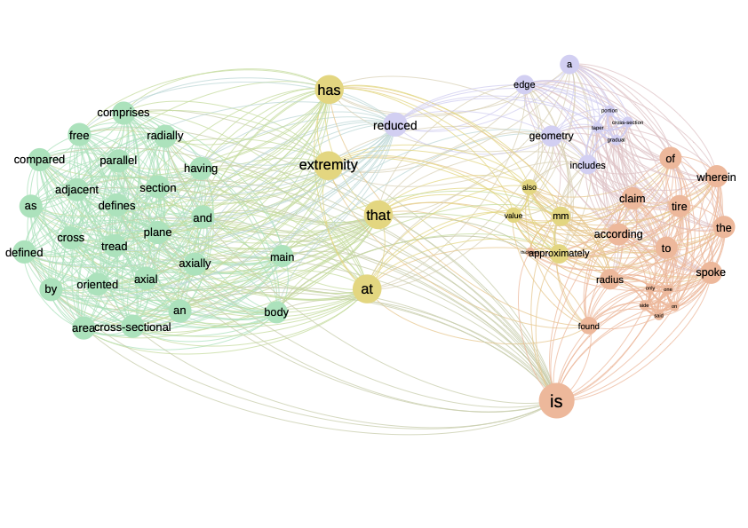
Textual network based on the \(\chi^2\) indicator. The structure of this network is equivalent to that produced by the Cramer indicator. Only a few nodes have changed position, but this is due solely to the spatialization algorithm.
The \(chi^2\) identifies deviations from randomness and is thus able to identify important terms with low frequencies. The denominator accentuates deviations between values compared to Cramer.
Mutual Information
A final indicator is Mutual information, which is characterized by the following formula: \
\[\begin{equation} I_{i,j} = log(\frac{n(i,j)}{e(i,j)}) \end{equation}\]More than a deviation from an observed value (like \(\chi^2\) or the Cramer indicator), Mutual Information identifies a multiplication. In other words, by how many times the observed number is greater than the expected number. The \(log(\cdot)\) function applied here initially transforms a value less than 1 ( value less than expected) into a negative value, while smoothing out high values. Figure \(\ref{information_criterion}\) illustrates this principle. A value \(> 1\) implies that the observed value is higher than expected and will receive a positive value. The log function reduces high values and in so doing also reduces the gaps between values.
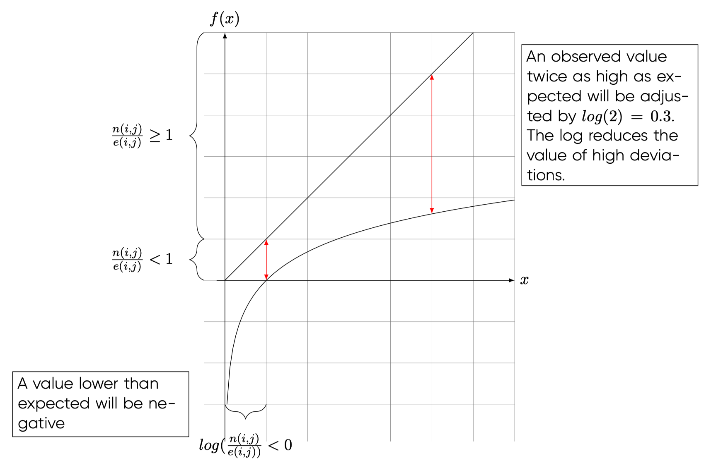
Applying this indicator to our sample, we obtain the matrix in table \(\ref{nw_semantic_MI}\). We notice in this matrix the presence of “-Inf” values corresponding to \(-\infty\). This value emerges when we divide by \(0\), which is the case here for some values. We find negative values corresponding to values lower than expected, and positive values corresponding to values higher than expected. Given the nature of the formula, this indicator gives a negative value to the same values as \(\chi^2\) and \(Cramer\). In a first approach, we’ll find the same network structure, since the same links (with negative values) will be removed from the network.
Figure \(\ref{information_criterion}\) shows the network based on the mutual information indicator. Once again, this network has the same structure as the previous two. The advantage of mutual information lies in the inclusion of the log function, which smoothes high values and limits the impact of high values.
The Mutual Information indicator smooths out strong co-occurrences, thereby reducing the impact of generic terms.
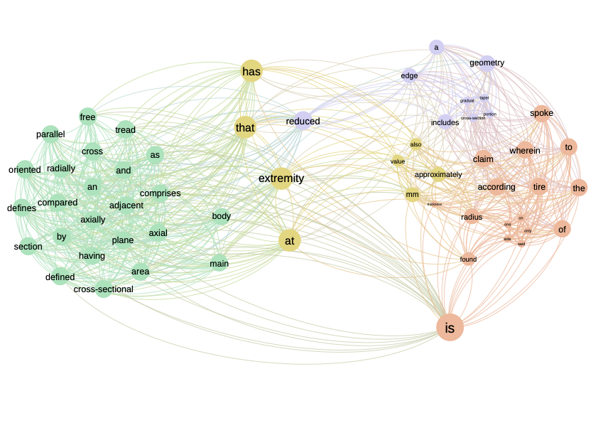 Textual network based on the “Mutual Information” indicator. Once again, we find the same structure as for the other two indicators.
Comparing the indicators
In the previous subsections, we showed how to calculate three indicators to identify links for a text network. We have seen that the networks extracted are identical even if the weights on the links change. To better understand the difference between these indicators and which indicator to choose in which case, let’s take a closer look at these three indicators and what makes them different. First, let’s focus on the formulas to identify what the real difference is in terms of values. To do this, we’ll make the following calculation. We’d like to know by how much we need to multiply one indicator to obtain another. For example, for \(\chi^2\) and Cramer, by how much must we multiply \(\chi^2\) to obtain Cramer’s score:
\[\begin{equation} \chi^2 \cdot factor = Cramer \end{equation}\]By doing this exercise for the three indicators, we obtain the results in the matrix \(\ref{indicators_comparison_table}\). In this matrix, we can read that we need to multiply Cramer by \(\sqrt{e}\) to obtain \(\chi^2\), and multiply \(\chi^2\) by \(\frac{1}{\sqrt{e}}\) to obtain Cramer.
| IM | \(\chi^2\) | Cramer | |
|---|---|---|---|
| IM | 1 | \(\frac{n-e}{\log\left(\frac{n}{e}\right)\sqrt{e}}\) | \(\frac{n-e}{\log\left(\frac{n}{e}\right)e}\) |
| \(\chi^2\) | \(\log\left(\frac{n}{e}\right) \cdot \frac{\sqrt{e}}{n-e}\) | 1 | \(\frac{1}{\sqrt{e}}\) |
| Cramer | \(\log\left(\frac{n}{e}\right) \cdot \frac{e}{n-e}\) | \(\sqrt{e}\) | 1 |
Table 1: Cette matrice regroupe les facteurs multiplicateurs pour passer d’un indicateur à un autre. Le sens de lecture est : il faut multiplier Cramer par \(\sqrt{e}\) pour obtenir \(\chi^2\).
All the factors of this matrix are positive. \(log(\frac{n-e}{log(\frac{n}{e})e}\) is positive because if we have \((n-e) < 0\) then \(log(\frac{n}{e}) < 0\) the result is positive. This shows that there is no sign change between the different indicators. By removing the links with negative weights, we remove the same links with these three indicators.
Next, let’s look at the level effect associated with the different indicators. Even if we keep the same sign, the scores differ because of the multipliers in the matrix.
Let’s start by comparing \(\chi^2\) and Cramer. The only difference between these two indicators is the numerator. In both formulas, the numerator is \(n(i,j)-e(i,j)\), so the indicators seek to measure a deviation from an expected value. This value is then divided by a different value depending on the indicator. In figure \(\ref{compare_chi_cramer}\) these two numerators are compared. The diagonal line represents the Cramer denominator, the curve the \(\chi^2\) denominator. The difference between the two functions shows that the higher \(e(i,j)\) is, the greater the difference between the two denominators. This implies that the higher the expected value for a co-occurrence, the more Cramer penalizes the score (\(e(i,j)\) being in the denominator, so we divide by a higher and higher value). In the case of \(\chi^2\), this value is much lower, so the scores are higher. So for the same value of \(e(i,j)\), Cramer penalizes more than the \(\chi^2\), and this penalty is all the stronger as \(e(i,j)\) increases.
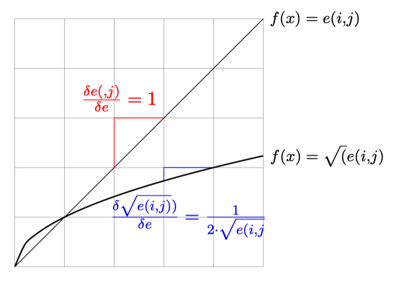
We can see from this first part of the analysis that Cramer’s indicator reduces high expected values ( terms with high co-occurrences) to lower values in a more pronounced way than \(\chi^2\). A more important point is the marginal effect for each function. The marginal effect is constant for Cramer (\(\frac{\delta e(i,j)}{\delta e} = 1\)), so when we increase \(e\) by one unit, we increase the denominator by one unit too. In the case of \(\chi^2\) we have a decreasing marginal effect (\(\frac{\delta"\sqrt{e(i,j)}}{\delta "e} = -\frac{1}{4}e^{3/4}\)). This implies that for each increase in \(e\), \(\sqrt{e(i,j)}\) increases, but the increase is smaller and smaller. This means that the difference between the \(\chi^2\) values becomes smaller and smaller, while the Cramer values remain constant. In an analysis, \(\chi^2\) therefore brings fewer distinctions on strong expected values, whereas Cramer remains more “distinguishing” <- find a word here, it’s clearly not that, but I can’t find it.
Indirect indicators
A second family of indicators are indirect indicators, meaning that what is taken into account are not direct co-occurrences between two words, but rather words that appear together with a third term. In other words, two terms are close if we often find them together with other terms. The weight we’re going to put on the link between two terms is therefore no longer a transformation of the number of co-occurrences, but a function of the number of times the co-occurrences are with another term. This type of indicator therefore compares all co-occurrences of a term with all co-occurrences of another term, and only increases if a third term makes the link. As shown in figure , it’s indirect links that will increase this indicator, not direct links. The links between “geometry” and “body” don’t play a role, but the fact that “tire” and “body” appear together with the term “geometry” indicates a certain proximity between the terms. This is what interests us in this type of indicator. For each word, we’ll compare and sum these indirect links to measure the proximity between two terms. In this way, we’re closer to what we might call a semantic link, since we’re taking into account all the words that appear in proximity to another term. As for the co-occurrence matrices we’ve used so far, we’re going to use them line by line rather than cell by cell.
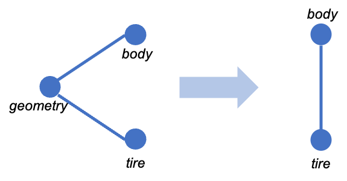
In what follows, we present two indirect indicators: cosine and distributional.
Cosine
The first indicator we’ll be looking at here is cosine, a well-known and widely used indicator in scientometrics [@eck2009normalize] and economics [@jaffe1986technological], [@engelsman1991mapping], [@breschi2003knowledge]. In a later chapter, we’ll show how we use this same indicator to understand technological proximity based on technological classifications. In this chapter, we focus on the application to textual analysis. Let’s go back to the co-occurrence matrix, which we recall here for fluency:
| tire | body | geometry | adjacent | edge | axial | radius | Somme exemple | Total corpus | |
|---|---|---|---|---|---|---|---|---|---|
| tire | 5 | 2 | 4 | 1 | 3 | 1 | 2 | 13 | 105 |
| body | 2 | 2 | 2 | 1 | 1 | 1 | 0 | 7 | 53 |
| geometry | 4 | 2 | 4 | 1 | 3 | 1 | 1 | 12 | 90 |
| adjacent | 1 | 1 | 1 | 1 | 1 | 1 | 0 | 5 | 39 |
| edge | 3 | 1 | 3 | 1 | 3 | 1 | 1 | 10 | 76 |
| axial | 1 | 1 | 1 | 1 | 1 | 1 | 0 | 5 | 39 |
| radius | 2 | 0 | 1 | 0 | 1 | 0 | 2 | 4 | 36 |
| Somme Exemple | 13 | 7 | 12 | 5 | 10 | 5 | 4 | 56 | \(\hdots\) |
| Total corpus | 105 | 53 | 90 | 39 | 76 | 39 | 36 | \(\hdots\) | 1372 |
Table 2: Extraction de la matrice des co-occurrences
Direct measurements compared observed co-occurrences with expected co-occurrences, so we were interested only in the individual cells of each matrix. The idea behind an indirect measure is to say that two terms are close because they appear together with other terms. In this sense, we’re more interested in semantic proximity: two terms that are surrounded by the same terms have a high probability of having the same meaning. To put this idea into practice, we need to compare all indirect co-occurrences between two terms. In other words, we need to identify with which other words each word co-occurs. If we want to know whether the word “tire” is close to the word “body”, we’ll have to check whether both are linked with “geometry”, “adjacent”, “edge”, “axial”, “radius” and so on for all the terms in the corpus. The reasoning and calculation will therefore mobilize vectors to facilitate the calculation of indicators. In what follows, we’ll move straight on to explaining the calculation. For a more intuitive explanation of this indicator, you can read the chapter on technological proximity, which explains the construction of the indicator step by step and explains the intuition behind each step.
The formula we’ll use here is
The denominator of this indicator counts the number of times two terms appear together with a third term. \(n(i,k)\) represents the frequency with which terms \(i\) and \(j\) appear together and \(n(j,k)\) the frequency for terms \(j\) and \(k\). Multiplication implies that if there is no direct link between \(i\) (or \(j\)) and \(k\), the product will be zero, so the value of the numerator does not increase. Note that even if a direct link exists ( \(n(i,j \neq 0\)) this does not increase the numerator.
Let’s take the example of the terms “tire” and “body” (but let’s stay within the framework of the restricted matrix so as not to fill entire pages with lines of calculation):
\[\begin{equation} \begin{split} \sum_{k=1}^{k} cooc_{ik} \cdot cooc_{jk} & = \sum_{k=1}^{5} cooc_{tire,k} \cdot cooc_{body, k}\\ & = (Cooc_{tire - geometry} \cdot Cooc_{body - geometry})\\ & + (Cooc_{tire - adjacent} \cdot Cooc_{body - adjacent})\\ & + (Cooc_{tire - edge} \cdot Cooc_{body - edge}) \\ & + (Cooc_{tire - axial} \cdot Cooc_{body - axial}) \\ & + (Cooc_{tire - radius} \cdot Cooc_{body - radius}) \\ & = (4 \cdot 2) + (1 \cdot 1) + (3 \cdot 1) + (1 \cdot 1) + (2 \cdot 0)\\& = 13 \end{split} \end{equation}\]There is no observed link between “radius” and “body”, so the product is zero. It becomes clear here that manual calculation is relatively time-consuming, especially if we have to do this for a corpus with thousands of words.
To calculate the final proximity between two CIB codes, divide by the norm of the two codes. Following on from our example :
\[\begin{equation} \begin{split} cos(\theta) & = \frac{\sum_{k=1}^{5} cooc_{tire,k} \cdot cooc_{body, k}}{\sqrt{\sum_{k=1}^{5} cooc_{tire,k}^2}\cdot \sqrt{\sum_{k=1}^{5} cooc_{body, k}^2}}\\ & = \frac{1}{\sqrt{\sum_{k=1}^{5} cooc_{tire,k}^2}\cdot \sqrt{\sum_{k=1}^{5} cooc_{body, k}^2}}\\ & = \frac{1}{\sqrt{4^2 + 1^2 + 3^2 + 1^2 + 2^2}\cdot \sqrt{2^2+1^2+1^2+1^2+0^2}}\\ & = \frac{13}{\sqrt{31}\cdot \sqrt{7}}\\ & = 0.88 \end{split} \label{proxi_nominateur2} \end{equation}\]There’s a point of caution here: in the classic cosine measure, the sum excludes only the \(i\) term and keeps \(j\). A comparison with a software program may give a slightly different result following this modification of the formula: \(\sqrt{\sum_{k \neq i,\textcolor{red}{j}} cooc(k,j)^2}\).\\}
The values for the submatrix we’ve been following since the beginning can be found in the table \(\ref{cosinus_matrix}\). We note here the symmetry of the matrix, as with the other indicators. The higher the score, the closer the two terms are. In the case of indicator \(\in [0,1]\), we have perfect proximity between the terms “axial” and “adjacent”. This implies that the two terms appear together with exactly the same terms throughout the corpus. In no case does this imply that the terms appear together, as the score does not allow us to infer on this question. If a term appears with no other terms, the score will be \(0\).
| tire | body | geometry | adjacent | edge | axial | radius | |
|---|---|---|---|---|---|---|---|
| tire | 0 | 0.882 | 0.975 | 0.857 | 0.979 | 0.857 | 0.889 |
| body | 0.882 | 0 | 0.929 | 0.949 | 0.966 | 0.949 | 0.862 |
| geometry | 0.975 | 0.929 | 0 | 0.898 | 0.983 | 0.898 | 0.884 |
| adjacent | 0.857 | 0.949 | 0.898 | 0 | 0.873 | 1 | 0.73 |
| edge | 0.979 | 0.966 | 0.983 | 0.873 | 0 | 0.873 | 0.878 |
| axial | 0.857 | 0.949 | 0.898 | 1 | 0.873 | 0 | 0.73 |
| radius | 0.889 | 0.862 | 0.884 | 0.73 | 0.878 | 0.73 | 0 |
Table 3: Table avec les scores cosinus
In figure \(\ref{cosinus_matrix}\) we represent the network based on these scores for the 5 documents in our test corpus. The structure of this network is different from that of the direct indicators. We don’t have any negative scores, so we have many more links, resulting in a much denser network. To take advantage of this type of network, we need to filter the scores to keep only the terms with a high score.
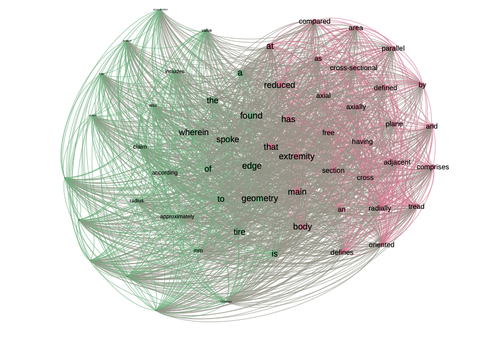
In figure \(\ref{illu_liens_subset}\) we show two examples, one where we’ve kept only links with a score > 0.75 and one where we’ve kept links with a score > 0.875. In our example we have words that are very close together, so the distinction is not obvious, but as we increase the filter we see that two components start to stand out, indicating that these contain terms that are not related to the rest of the corpus, or at least to a lesser extent.
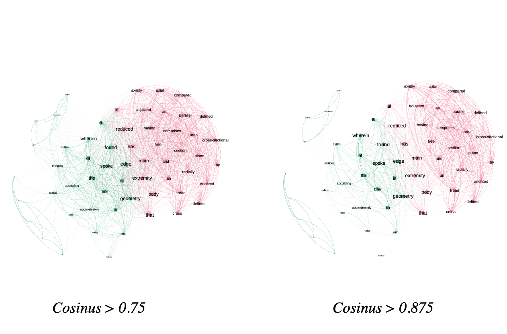
Distributional
The cosine indicator is based on raw co-occurrences between terms. Like cosine, the “Distributional” indicator aims to identify semantic meaning between terms. Instead of relying on raw counts, “Distributional” bases its calculation on the “Mutual Information” indicator. The indicator was proposed by and takes the following formula:
\[\begin{equation} \frac{\sum_{k\neq i,j, I(i,k) > 0}min(I(i,k),I(j,k)))}{\sum_{k\neq i,j, I(i,k) > 0} I(i,k)} \end{equation}\]As with cosine, this indicator targets indirect links. We thus find calculations based on \(I(i,k)\) and \(I(j,k)\), where \(k\) is the term in common. When two terms have a third in common, we take the minimum between the weights. The indicator is then normalized by the sum of the weights (in this case, mutual information).
To illustrate the calculation, we calculate the score for the terms “tire” and “geometry” in figure \(\ref{illu_lien_indirecte}\). In the figure, the scores correspond to the mutual information scores.
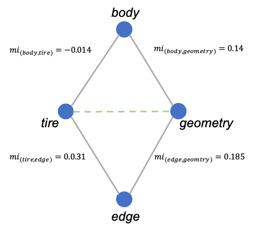
Illustration of the “distributional” indicator principle. The weights on the links correspond to the “Mutual information” indicator of the \(\ref{nw_semantic_MI}\) matrix. Here, we seek to calculate the value for the terms “tire” and “geometry”. The network shows that the two terms have two others in common: “body” and “edge”.
The numerator is calculated by summing the minimum values for each triptych, keeping only the positive values. As a reminder, a negative value in mutual information implies a co-occurrence above the expected, to identify a semantic meaning we only wish to keep the co-occurrences which are more important than expected. In our example we therefore obtain:
\[\begin{eqnarray} Distr(tire, geometry) &= \frac{min(0.014) + min(0.031, 0.185)}{0.031} = 5.516\\ Distr(geometry, tire) &= \frac{min(0.14) + min(0.031, 0.185)}{0.14 + 0.185} = 0.5261 \end{eqnarray}\]Note that because of the formulation of the denominator, the scores are asymmetric, implying that the matrix containing the values will be asymmetric as well. The matrix is presented in the table \(\ref{distrib_matrix}\). The higher the score, the stronger the proximity. A score of 0 implies that the two terms do not appear together with a third term. As the score increases, the number of triads increases and the IM scores become more similar.
| tire | body | geometry | adjacent | edge | axial | radius | |
|---|---|---|---|---|---|---|---|
| tire | 0 | 0.93 | 1 | 0 | 0.29 | 0 | 0.1 |
| body | 1 | 0 | 0 | 1 | 1 | 1 | 0 |
| geometry | 0.17 | 0 | 0 | 1 | 0.21 | 1 | 0.46 |
| adjacent | 0 | 0.48 | 0.49 | 0 | 0 | 1 | 0 |
| edge | 0.81 | 0.76 | 1 | 0 | 0 | 0 | 1 |
| axial | 0 | 0.48 | 0.49 | 1 | 0 | 0 | 0 |
| radius | 1 | 0 | 0.41 | 0 | 0.08 | 0 | 0 |
Table 1: Distributional scores for 7 identified terms. We note that this indicator is the only one to be asymmetrical. This means that the network we can create from this indicator will be directed, given that the weight of the link \(a \rightarrow b \neq b \rightarrow a\).
In figure \(\ref{distr_illustration_nw}\) we illustrate the network resulting from this indicator. As with the cosine-based network, it’s useful to use thresholds to highlight the underlying structure. In the example we have filtered out links below 0.7 and 0.94. The more we filter, the more the network structure breaks down and we see components emerge. In our example, the aim of which was to be able to calculate indicators by hand for educational purposes, we have very few documents and therefore a very dense network. With filtering at 0.94 we removed only 52% of the links. In a larger corpus, filtering should have a greater impact.
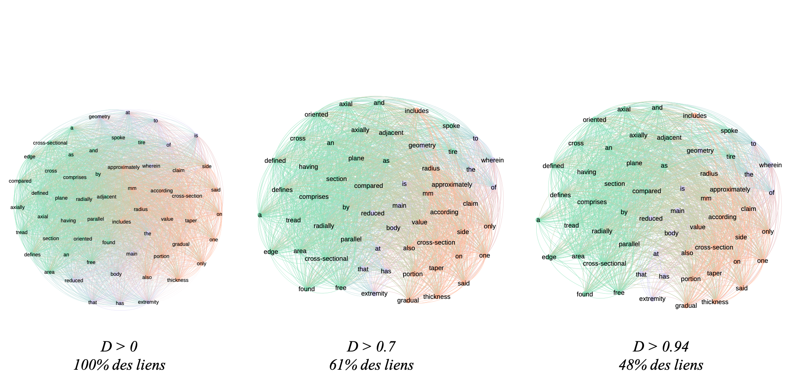
Conclusions and recap of the interpretations
We have presented a number of indicators available in the free Cortext software. There are, of course, many more indicators available for producing textual and semantic networks, but we’re focusing here on a solution that’s easy to access and free of charge, so as to spread the practice as widely as possible.
In the table \(\ref{tableau_recap_indicateurs}\) we summarize all the indicators processed, their interpretation and their advantages and limitations.
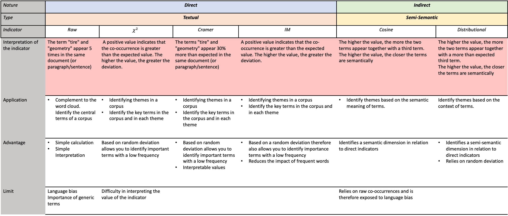
This table summarizes the use of all the indicators presented. The nature of the indicator depends on the type of link analyzed: direct, meaning that we’re looking at terms that appear together; indirect, meaning that we’re looking at terms that appear together with a third term. We make a distinction here between textual and semantic, as the interpretation of the results is not the same.
The points to remember when dealing with a textual or semantic network are, firstly, to identify whether the indicator is based on direct or indirect measurement and, secondly, to deduce whether we are dealing with a textual or semantic analysis. A textual analysis shows the terms in the corpus, but nothing more. A semantic analysis highlights terms by their meaning. In this chapter (and in cortext), this is approached by means of indirect indicators, which include in the calculation a comparison between all the terms in the corpus.
The aim here is not to specify that one indicator is better than another, as this will depend on the use case. The most important thing is to understand how these indicators are calculated or, failing that, to be aware of their limitations, as presented in this table, in order to make a coherent choice of indicator for the chosen use case.